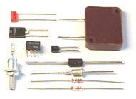
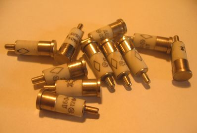

1.5.8. Сверхвысокочастотные диоды и стабилитроны
Стабилитроны и стабисторы
Полупроводниковые диоды, используемые для стабилизации постоянного напряжения на нагрузке, называют стабилитронами. В стабилитронах (VD) используется участок обратной ветви вольт-амперной характеристики (ВАХ) в области электрического пробоя. В этом случае при изменении тока, протекающего через стабилитрон, от Iст.мин до Iст.макс напряжение на нем почти не изменяется. Если нагрузка RH подключена параллельно стабилитрону, напряжение на ней также будет оставаться постоянным в указанных пределах изменения тока, протекающего через стабилитрон (рис. 7.8). С помощью этих диодов стабилизируют напряжения примерно от 3,5 В и выше.
Рис. 7.8. ВАХ стабилитрона (VD) и схема простейшего стабилизатора напряжения.
Для стабилизации напряжения порядка 1 В применяют стабисторы. У стабисторов используется не обратная, а прямая ветвь вольт-амперной характеристики. Поэтому их включают не в обратном, как стабилитроны, а в прямом направлении. Стабилитроны и стабисторы изготовляются, как правило, из кремния.
Высокочастотные диоды – это приборы универсального назначения, которые могут быть использованы для выпрямления, детектирования и других нелинейных преобразований электрических сигналов в диапазоне до 600 МГц. Они изготовляются, как правило, из германия или кремния и имеют точечную структуру. Точечная структура высокочастотных диодов обеспечивает небольшую величину емкости p-n перехода (не более 1 пФ), что позволяет эффективно использовать их на высоких частотах. Однако малая площадь контакта между частями полупроводника с проводимостью n и р не позволяет рассеивать в области р-n - перехода значительные мощности, поэтому высокочастотные диоды не используются в схемах, рассчитанных на большие напряжения и токи, и применяются, главным образом, в измерительной аппаратуре и низковольтных слаботочных выпрямителях.
Достоинством высокочастотных диодов является также меньшая зависимость обратного тока от температуры, чем в плоскостных диодах. В них удвоение тока I0 происходит при приращении температуры на 15 ... 200C, в то время как в плоскостных диодах обратный ток возрастает примерно в 2 ... 2,5 раза при повышении температуры на каждые 100С. В дополнение к обычным параметрам, которыми характеризуются диоды, высокочастотные диоды дополнительно характеризуются общей емкостью CД , измеренной между выводами диода при заданном напряжении смещения и частоте; дифференциальным сопротивлением rдиф представляющим отношение приращения напряжения на диоде к вызвавшему его приращение току; диапазон частот Df, который определяется как разность предельных значений частот, при которых средний выпрямленный ток диода не менее заданной доли его значения на низшей частоте.
Высокочастотные диоды используются в схемах детекторов, ограничителей, нелинейных сопротивлений, ключей и т.д. В сверхвысокочастотных схемах, ТТЛ-логике, ИС (интегральных микросхемах) применяются высокочастотные диоды Шоттки, у которых барьерная емкость не превышает 0,01пФ, типичный рабочий диапазон составляет 5 ... 250 ГГц, а время переключения - менее 0,1мс, обратные токи превышают несколько микроампер, а обратные напряжения лежат в интервале 10 ... 1000 В.
Под названием «высокочастотные диоды» объединяется целая группа полупроводниковых диодов, предназначенных для обработки высокочастотных сигналов, а именно:
- детекторные диоды, предназначенные для выделения низкочастотного сигнала из модулированного колебания;
- смесительные диоды, используемые для изменения несущей частоты модулированного колебания;
- модуляторные диоды, предназначенные для модуляции высокочастотного колебания, и др.
Для всех этих диодов общим является работа на высоких частотах.